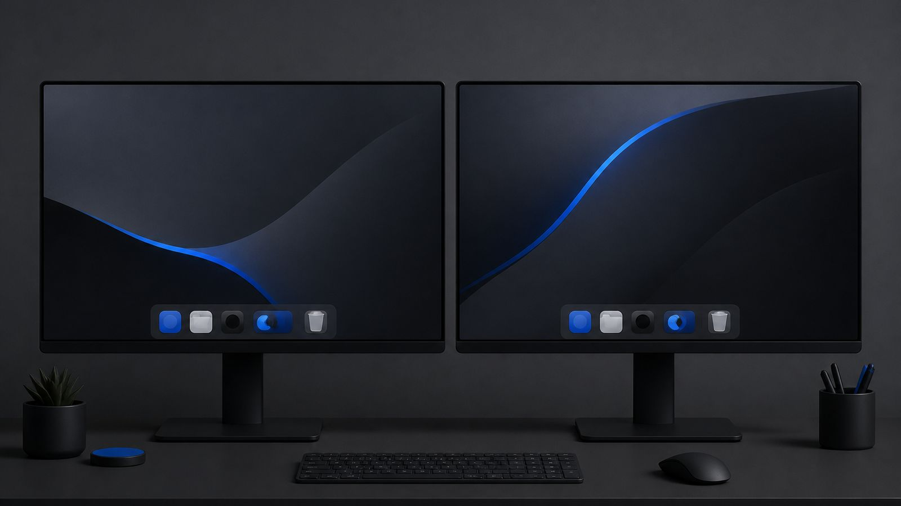

Superdock
SuperdockHow to show the Dock on every monitor on a Mac

Short answer: macOS shows the Dock on one display at a time. With Displays have separate Spaces turned on, the Dock jumps to another monitor when you hold the pointer at that screen's bottom edge for a moment. There is no built-in way to keep a Dock on every monitor at once; Superdock adds that, and can show each monitor only the apps whose windows are on it.
How does the Dock behave with two monitors?
By default the Dock lives on the display where the menu bar is (System Settings, Displays, Arrange, drag the white bar to choose). If Displays have separate Spaces is on (System Settings, Desktop & Dock), moving the pointer to the bottom edge of another display and pausing pulls the Dock over to that display. It is a single Dock that travels, not one per screen, and the travel needs a deliberate pause that many people find fiddly.
Can I keep a Dock on each monitor with macOS alone?
No. You can move it, hide it, or change its size and side, but you cannot duplicate it. Every request for a per-display Dock ends at a third-party tool.
How do I get a dock on every monitor?
- Install Superdock and grant Accessibility when asked.
- Check Settings, General, Layout, Display. All displays is the default: one dock per connected monitor, each at the bottom of its own screen, all identical in size and style to Apple's.
- Choose what each dock shows. Running apps: On every dock shows the same running row everywhere. Where their windows are shows each monitor only the apps that have a window on that monitor, so the dock in front of you matches what is on that screen. Pinned apps always show on every dock.
What about the other display modes?
Main display keeps a single dock on the menu bar screen. Follows pointer keeps a single dock and moves it to whichever screen the pointer is on, immediately, without Apple's edge-and-pause gesture. Both are one click away in the same setting.
Frequently asked questions
Do the docks stay in sync?
Yes. Pins, order and settings are shared; only the running row can differ, and only if you choose Where their windows are.
Does the system Dock get in the way?
No. Superdock hides Apple's Dock while it runs and restores it exactly as it was when you quit.
Does it work with different resolutions?
Yes. Each dock sizes itself from the Dock size setting, the same one Apple uses, on its own display.
Download Superdock for Mac Free for 14 days, no account. $7.99 once after that.